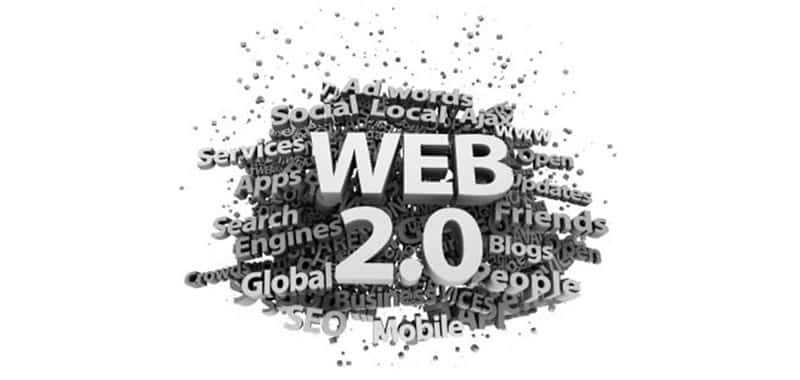

Visión General
Los 2000's fueron una década clave para el desarrollo de la web. Desde páginas estáticas a plataformas interactivas, pasando por el surgimiento de redes sociales, comercio electrónico y las aplicaciones web modernas.
Línea del Tiempo: Hitos Clave
1. El Auge de la Web 2.0 (2000-2005)
La web comenzó a ser más interactiva, permitiendo la creación de contenido por los usuarios y la colaboración entre ellos.
Tecnologías clave:
- AJAX: Actualización de contenido sin recargar la página.
- Plataformas como Blogger y Wikipedia para la creación de contenido.
- Redes sociales como MySpace y Facebook marcaron el inicio de la interacción en línea.
2. Expansión del Comercio Electrónico (2005-2010)
Durante esta fase, el comercio electrónico ganó popularidad gracias a las plataformas de pago y el crecimiento de la confianza de los consumidores.
Innovaciones en eCommerce:
- Amazon y eBay se consolidaron como grandes plataformas de venta en línea.
- Google Ads y el SEO jugaron un papel crucial en el crecimiento de la publicidad digital.
- Sistemas de pago como PayPal facilitaron las transacciones online.
3. El Nacimiento de las Aplicaciones Web Modernas
A medida que avanzaba la década, la web se transformó en una plataforma para aplicaciones complejas y herramientas colaborativas.
Avances clave:
- HTML5 y CSS3 transformaron el diseño y la funcionalidad web.
- YouTube cambió la forma en que consumimos videos en línea.
- El Cloud Computing comenzó a tomar relevancia con herramientas como Google Docs.
4. Impacto Cultural y Social
La web en los 2000's no solo cambió la forma en que nos conectamos, sino que también revolucionó el trabajo, la información y la cultura digital global.